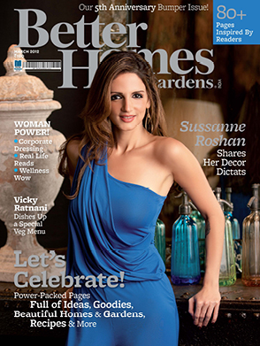
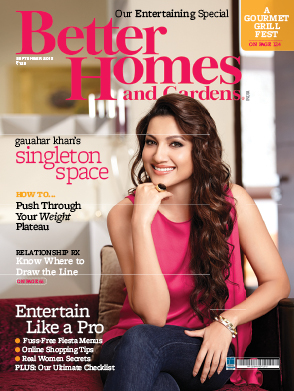
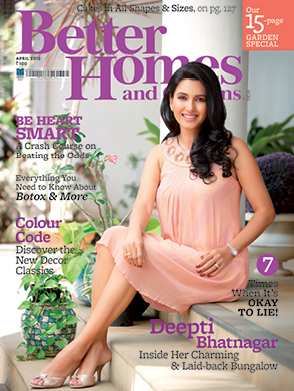
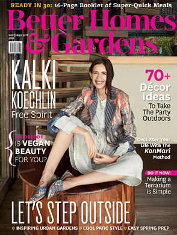
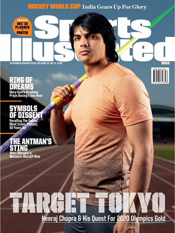
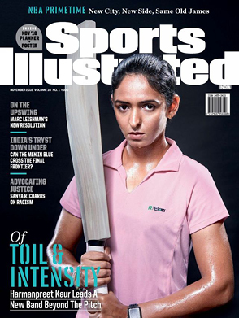
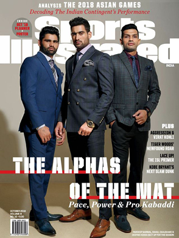
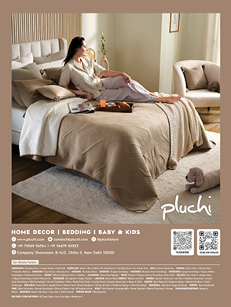
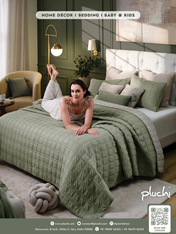

CREATIVE DIRECTION
PROVIDE CLEAR CREATIVE DIRECTION, SOPS, AND ONGOING FEEDBACK TO ENSURE CONSISTENCY, ACCURACY, AND QUALITY ACROSS EVERY PROJECT.
CREATIVE DIRECTION
& SOPS
PROVIDE CLEAR CREATIVE DIRECTION, GUIDELINES, AND SOPS TO HELP THE PRODUCTION TEAM MAINTAIN CONSISTENCY, ACCURACY, AND QUALITY ACROSS PROJECTS.
ON-THE-JOB
SUPPORT
WORK CLOSELY WITH PRODUCTION ARTISTS WHEN THEY FACE CHALLENGES, HELPING THEM UNDERSTAND REQUIREMENTS, TROUBLESHOOT ISSUES, AND FIND PRACTICAL SOLUTIONS.
FEEDBACK &
QUALITY REVIEW
SHARE CLEAR, CONSTRUCTIVE FEEDBACK THROUGHOUT THE PRODUCTION PROCESS TO IMPROVE EXECUTION AND ENSURE WORK MEETS THE REQUIRED CREATIVE AND TECHNICAL STANDARDS.
KNOWLEDGE SHARING & GUIDANCE
SHARE DESIGN KNOWLEDGE, PRODUCTION BEST PRACTICES, AND PROJECT-SPECIFIC REQUIREMENTS TO HELP THE TEAM WORK MORE CONFIDENTLY AND EFFICIENTLY.
CONTINUOUS IMPROVEMENT
IDENTIFY RECURRING CHALLENGES WITHIN THE PRODUCTION WORKFLOW AND RECOMMEND IMPROVEMENTS TO PROCESSES, GUIDELINES, AND TEAM PRACTICES.








